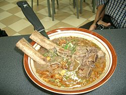

Sop Konro

Sup Konro adalah masakan sup iga sapi khas Indonesia yang berasal dari tradisi Bugis dan Makassar. Sup ini biasanya dibuat dengan bahan iga sapi atau daging sapi. Masakan berkuah warna coklat kehitaman ini biasa dimakan dengan burasa dan ketupat yang dipotong-potong terlebih dahulu. Warna gelap ini berasal dari buah kluwek yang memang berwarna hitam. Bumbunya relatif "kuat" akibat digunakannya ketumbar. Rasa pedas dan berbumbu ini dibuat dari campuran rempah-rempah, seperti ketumbar, keluwak (buah yang menyebabkan masakan berwarna hitam), sedikit pala, kunyit, kencur, kayu manis, asam, daun lemon, cengkeh, dan daun salam. Konro aslinya dimasak berkuah dalam bentuk sup yang kaya rempah, akan tetapi kini terdapat variasi kering yang disebut "Konro bakar" yaitu iga sapi bakar dengan bumbu khas konro.
Resep Sop Konro
Bahan-bahan:~ 1 kg iga sapi.
~ 4 lembar daun salam.
~ 2 ruas jari lengkuas, geprek.
~ Garam & kaldu jamur secukupnya.
~ Minyak untuk menumis bumbu secukupnya.
~ Air secukupnya.
Pelengkap:
~ Bawang goreng.
~ Irisan daun bawang & seledri.
~ Sambel rawit.
~ Jeruk nipis.
Bumbu halus:
~ 10 butir bawang merah.
~ 10 siung bawang putih.
~ 1 sdt ketumbar.
~ 1 sdt merica.
~ 1/2 sdt jintan.
~ 5 buah kluwek, rendam isinya di air panas.
~ 5 butir kemiri.
~ 1 ruas jari kunyit.
~ 1.5 ruas jari jahe.
~ 3 batang serai, ambil bagian putihnya.
~ 1 buah pala ukuran kecil.
~ 125 gr kacang tanah goreng.
~ 5 butir cengkeh.
~ 3 butir kapulaga.
~ 2 batang kayu manis.
Langkah:
~ Cuci bersih iga, kemudian presto selama 30 menit atau rebus hingga daging empuk.
~ Pindahkan ke panci biasa, tambahkan air secukupnya.
~ Beri daun salam dan lengkuas, didihkan.
~ Tumis bumbu halus hingga harum, lalu masukkan ke panci yg berisi iga.
~ Beri garam, kaldu jamur, kapulaga, kayu manis dan cengkeh.
~ Masak hingga bumbu meresap ke dalam iga, matikan api.
~ Sajikan sop konro bersama pelengkapnya.
Sumber: Wikipedia, cookpad.com